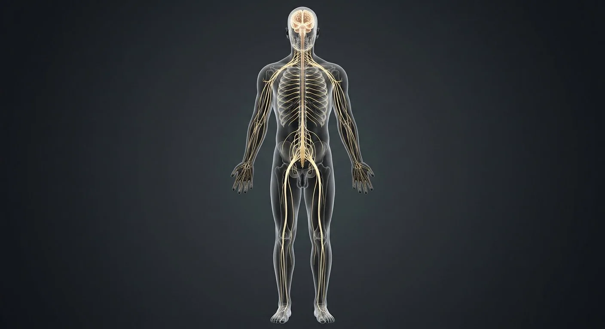

How this part of the body works
Compare with the female nervous page: the circuitry is identical; only body habitus and pelvic branching angles differ slightly.
Read the anatomy, part by part
These 12 structures correspond to the chapter’s regional illustration or schematic. Each entry separates location, function and a clinical point.
Brain
Cerebrum, cerebellum and brainstem inside the cranial vault.
What it doesIntegration, consciousness, motor planning and autonomic control.
Clinical connectionHead injury scales from concussion to diffuse axonal injury.
Spinal cord
31-segment cord from foramen magnum to L1–L2.
What it doesTwo-way tracts plus segmental reflex circuits.
Clinical connectionCord transection level predicts deficit pattern precisely.
Cervical plexus
Nerve network in the posterior triangle of the neck.
What it doesNeck muscles and skin; phrenic nerve to diaphragm.
Clinical connectionC3-4-5 keeps the diaphragm alive — injury above C4 stops breathing.
Brachial plexus
Roots-trunks-divisions-cords-branches behind the clavicle.
What it doesAll motor and sensory supply of the upper limb.
Clinical connectionErb's palsy (C5-6) from birth traction: waiter's-tip hand.
Intercostal nerves
Ventral rami running in subcostal grooves.
What it doesChest-wall muscles and segmental skin band.
Clinical connectionShingles follows one intercostal dermatome.
Lumbar plexus
Network within psoas major.
What it doesAnterior thigh and medial leg supply.
Clinical connectionFemoral nerve block anaesthetises the anterior thigh.
Sacral plexus
Plexus on the piriformis wall of the pelvis.
What it doesGluteal region, perineum and the sciatic nerve.
Clinical connectionSciatica radiates along its branches down the leg.
Sciatic nerve
Largest nerve in the body (L4–S3).
What it doesHamstrings and all muscles below the knee.
Clinical connectionWrong gluteal injection site can injure it — use upper outer quadrant.
Sympathetic trunk
Chain of ganglia from skull base to coccyx.
What it doesFight-or-flight: heart up, gut down, pupils wide.
Clinical connectionHorner's syndrome: ptosis, miosis, anhidrosis.
Vagus nerve (CN X)
Longest cranial nerve, neck to pelvis.
What it doesParasympathetic brake on heart, lungs and gut.
Clinical connectionVagal stimulation terminates SVT — the Valsalva trick.
Femoral nerve
L2–L4 branch under the inguinal ligament.
What it doesQuadriceps power and anterior-thigh sensation.
Clinical connectionLoss → buckling knee and absent knee jerk.
Dorsal root ganglion
Sensory cell-body cluster on each dorsal root.
What it doesHouses pseudounipolar sensory neurons.
Clinical connectionVaricella hides here and re-emerges as shingles.
Deeper structures and tissue layers
These 8 additional entries give anatomical context. They are deliberately not assigned a photographic pin on the regional image.
Related deep chapters: Brachial plexus · arm nerves, Cerebrum · cortex & deep pathways, Meninges, CSF & venous sinuses.
C5–T1 ventral rami
Five spinal nerve ventral rami build the typical plexus; not the intrathecal dorsal/ventral rootlets.
What it doesProvide segmental motor and sensory fibers to upper limb.
Clinical connectionAnatomy can be prefixed C4–C8 or postfixed C6–T2.
Cortical gray matter
Neuronal cell-body sheet folded into gyri and sulci.
What it doesIntegrates sensory, motor and association information.
Clinical connectionRegional cortical lesions give different deficits.
Periosteal cranial dura
Outer cranial dural layer adherent to inner skull.
What it doesForms tough outer covering and part of sinus walls.
Clinical connectionSpinal epidural space differs from cranial periosteal interface.
Interscalene passage
Roots and trunks pass between anterior and middle scalene muscles.
What it doesConveys plexus out of neck.
Clinical connectionSite of interscalene regional anesthesia.
Layer I · molecular
Superficial neuropil-rich layer below pia, with relatively few neuronal somata.
What it doesSupports horizontal intracortical connections.
Clinical connectionSix-layer plan is a template, not identical in every area.
Meningeal cranial dura
Inner tough dural layer reflecting as falx and tentorium.
What it doesPartitions cranial cavity and surrounds sinuses.
Clinical connectionDural folds constrain mass displacement.
Upper trunk
Formed by union of C5 and C6 ventral rami.
What it doesRedistributes upper-root fibers into divisions.
Clinical connectionUpper-trunk traction can weaken shoulder abduction and elbow flexion.
Layer II · external granular
Small pyramidal and granule-cell zone.
What it doesContributes intracortical signaling.
Clinical connectionCell density varies across sensory and motor cortex.
Five questions about Nervous system — male
Short answers grounded in the structures described above. Use the illustrated guide for anatomical context.
Is the male nervous system different from the female nervous system?
The main brain, spinal cord and peripheral nerve plan is shared. Pelvic organ targets and some local nerve relationships differ with reproductive anatomy.
Which nerves supply the male pelvis?
Autonomic pelvic plexuses reach pelvic organs, while somatic branches including the pudendal nerve supply much of the perineum. Exact pathways are covered in regional chapters.
What does the brain do in the male nervous system?
Cerebrum, cerebellum and brainstem inside the cranial vault. Function: Integration, consciousness, motor planning and autonomic control.
Where is the cervical plexus on the male nerve map?
Nerve network in the posterior triangle of the neck. Function: Neck muscles and skin; phrenic nerve to diaphragm.
What do the intercostal nerves do in the male body?
Function: Chest-wall muscles and segmental skin band. Ventral rami running in subcostal grooves.
Related anatomy guides
Follow these connected structures and body systems in the illustrated atlas.
 Nervous system — overviewOne continuous network: the brain and spinal cord compute, and 43 pairs of peripheral nerves carry orders out and reports back.↗
Nervous system — overviewOne continuous network: the brain and spinal cord compute, and 43 pairs of peripheral nerves carry orders out and reports back.↗ Nervous system — femaleThe female figure with every nerve pathway highlighted — study pelvic plexus branching on female proportions.↗
Nervous system — femaleThe female figure with every nerve pathway highlighted — study pelvic plexus branching on female proportions.↗ Male body — anteriorA glass-body view of the male: every major organ in place, from brain to testes, with the reproductive tract in the pelvis.↗
Male body — anteriorA glass-body view of the male: every major organ in place, from brain to testes, with the reproductive tract in the pelvis.↗Further reading
General anatomy references and related source chapters for continued study. These links do not make the digital illustrations clinical images or certify every anatomical variant.
This educational material does not provide medical advice, diagnosis or treatment. A named clinical reviewer has not been claimed for this page.
Open the interactive plate, pins, animated schematic and self-test.